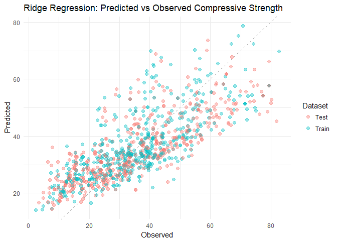

We load the libraries we will use
library(glmnet) # Library for penalized regression models and cross-validation
library(caret) # General Purpose Machine Learning Modelling Framework
library(tidyverse) # Efficient data manipulation and I/O
library(ggplot2) # A grammar of graphics for plotting
library(ggthemes) # Improves layout adn colors for ggplot2 graphicsWe obtain the data
concrete <- read_csv("https://raw.githubusercontent.com/SDS383team/HW5/master/data/ConcreteData.csv")Here is how the first rows look like:
| Cement | Blast Furnace Slag | Fly Ash | Water | Superplasticizer | Coarse Aggregate | Fine Aggregate | Age | Compressive strength |
|---|---|---|---|---|---|---|---|---|
| 540.0 | 0.0 | 0 | 162 | 2.5 | 1040.0 | 676.0 | 28 | 79.99 |
| 540.0 | 0.0 | 0 | 162 | 2.5 | 1055.0 | 676.0 | 28 | 61.89 |
| 332.5 | 142.5 | 0 | 228 | 0.0 | 932.0 | 594.0 | 270 | 40.27 |
| 332.5 | 142.5 | 0 | 228 | 0.0 | 932.0 | 594.0 | 365 | 41.05 |
| 198.6 | 132.4 | 0 | 192 | 0.0 | 978.4 | 825.5 | 360 | 44.30 |
Our task is to compare regression models where the response variable is Compressive strength and the rest are used as predictors.
To begin, we first create train and test sets splitting the data by half, then construct we define the design matrix X and response vector y for each testing and training sets. The train and test data will be stored in matrix and numeric vector form since the package glmnet which we use later need an input of this form.
set.seed(999) # for reproducibility
train_idx <- sample(1:nrow(concrete), size = nrow(concrete) / 2)
test_data <- concrete %>%
slice(train_idx)
train_data <- concrete %>%
slice(-train_idx)
X_test <- test_data %>%
select(-`Compressive strength`) %>%
data.matrix()
X_train <- train_data %>%
select(-`Compressive strength`) %>%
data.matrix()
y_test <- test_data %>%
pull(`Compressive strength`)
y_train <- train_data %>%
pull(`Compressive strength`)Below are the commands to compute five different regression models and estimate their generalization errors.
We run and save the RMSE for linear regression on the full training with all the variables using lm.fit–which is the core of the base lm.
mlr <- lm(`Compressive strength` ~ ., data = train_data)
rmse_train_mlr <- sqrt(mean((y_train - predict(mlr, train_data))^2))
rmse_test_mlr <- sqrt(mean((y_test - predict(mlr, test_data))^2))We now repeat the same training but with 10-fold cross validation on the training set. Since we are not tuning any parameter the average RMSE should be very similar to the rmse on the test set.
# Number of folds for cross-validation
nfolds <- 10
size <- nrow(train_data)
# Create 10 equal size folds as a list of validation indexes
folds <- split(sample(size), cut(1:size, breaks = nfolds, labels = FALSE))
# Perform 10 fold cross validation
rmse_cv_mlr_k <- numeric(nfolds)
for (k in 1:nfolds) {
idx <- folds[[k]]
mod <- lm(`Compressive strength` ~ ., data = train_data[-idx, ])
rmse_cv_mlr_k[k] <- sqrt(mean((y_train[idx] - predict(mod, train_data[idx, ]))^2))
}
rmse_cv_mlr <- mean(rmse_cv_mlr_k)We will now choose the best model using the Bayesian Information Criterion. The BIC is a function that penalizes each free variable, selecting the one that best minimizes $p\log(n) - 2\log(\hat{L})$ where n is the number of observations on the dataset. The functionality of model selection using BIC in R is given by the function step with the option k = log(n). In addition we set trace FALSE to avoid verbose printing. The output input of step is our linear model and the output is another linear model that contains the selected variables only.
bicmlr <- lm(`Compressive strength` ~ ., data = train_data) %>%
step(k = log(nrow(train_data)), trace = FALSE)
rmse_train_bicmlr <- sqrt(mean((y_train - predict(bicmlr, train_data))^2))
rmse_test_bicmlr <- sqrt(mean((y_test - predict(bicmlr, test_data))^2))We now repeat the cross validation on the same sets as before
rmse_cv_bicmlr_k <- numeric(nfolds)
for (k in 1:10) {
idx <- folds[[k]]
mod <- lm(`Compressive strength` ~ ., data = train_data[-idx, ]) %>%
step(k = log(nrow(train_data) - length(idx)), trace = FALSE)
rmse_cv_bicmlr_k[k] <- sqrt(mean((y_train[idx] - predict(mod, train_data[idx, ]))^2))
}
rmse_cv_bicmlr <- mean(rmse_cv_bicmlr_k)For the penalized models we now use the glm package, which takes numeric matrices as input. The function glmnet has an elastic mixing input alpha, which does the lasso regression when set to alpha = 1. The Lasso adds a penalty of the form λ∥β∥1 to the multiple linear regression model. While we could just “guess” a value for λ, it is usually obtained from cross validation or from comparing on a test set, this is implemented on the cv.glmnet function.
lasso = cv.glmnet(X_train, y_train, alpha = 1, type.measure = "mse", nfolds = 10)
rmse_cv_lasso <- sqrt(min(lasso$cvm))
rmse_train_lasso <- sqrt(mean((predict(lasso, X_train, s = "lambda.min") - y_train)^2))
rmse_test_lasso <- sqrt(mean((predict(lasso, X_test, s = "lambda.min") - y_test)^2))Setting alpha = 0 the glmnet regression yields Ridge.
ridge = cv.glmnet(X_train, y_train, alpha = 0, type.measure = "mse", nfolds = 10)
rmse_cv_ridge <- sqrt(min(ridge$cvm))
rmse_train_ridge <- sqrt(mean((predict(ridge, X_train, s = "lambda.min") - y_train)^2))
rmse_test_ridge <- sqrt(mean((predict(ridge, X_test, s = "lambda.min") - y_test)^2))An elastic net interpolates the lasso and ridge regularization. By setting alpha = 0.5 in the cv.glmnet function we compute an elastic net.
enet = cv.glmnet(X_train, y_train, alpha = 0.5, type.measure = "mse", nfolds = 10)
rmse_cv_enet <- sqrt(min(enet$cvm))
rmse_train_enet <- sqrt(mean((predict(enet, X_train, s = "lambda.min") - y_train)^2))
rmse_test_enet <- sqrt(mean((predict(enet, X_test, s = "lambda.min") - y_test)^2))Here is a table with the performance of each model using the Root MSE.
| Model | Training | 10-Fold CV | Test |
|---|---|---|---|
| MLR | 10.3459 | 10.5037 | 10.5281 |
| MLR with BIC | 10.4303 | 10.6091 | 10.5453 |
| Lasso | 10.3466 | 10.5932 | 10.5206 |
| Ridge | 10.4959 | 10.6980 | 10.4797 |
| Elastic Net (alpha=0.5) | 10.3467 | 10.5641 | 10.5205 |
From the table we see most models performed equally well on the test set. This is not often the case, but it is plausible since we don’t have a large number of variables, which is the scenario where penalized models usually perform better. In the table it is shown that Ridge is the best performer, but after trying different random seed is the way we splitted the data, we saw that this is not always the case; sometimes even Multiple Linear Regression can be the best one.
We add some plots to our analysis to better understand what happened.
It is always good to compare the predicted vs the fitted values. Since Ridge regression was the best in our test, and most models performed the same, we show the plot for the Ridge model only.
plotdata <- concrete %>%
mutate(Dataset = ifelse(1:nrow(concrete) %in% train_idx, "Train", "Test")) %>%
mutate(Predicted = as.numeric(predict(ridge, as.matrix(concrete[ ,-ncol(concrete)]))))
ggplot(plotdata, aes(x = `Compressive strength`, y = Predicted, colour = Dataset)) +
geom_point(size = 3, alpha = 0.4) +
geom_abline(intercept = 0, slope = 1, linetype = "dashed") +
theme_minimal() +
ggtitle("Ridge Regression: Predicted vs Observed")
When doing models like Lasso, Ridge and Elastic Nets it is a good practice to see how the coefficients shrink as λ varies, as well as to see the different cross-validated errors